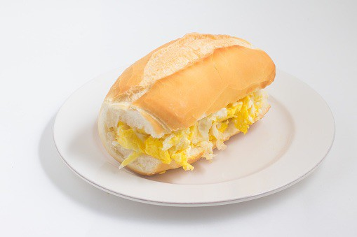

Pão com Ovo

Descrição
Aprenda a fazer um delicioso pão com ovo com lembrança da infância
Ingredientes
- 1 Pão francês
- 1 Ovo
- 1 Cebola média cortada em rodelas
- Maionese
- Ketchup
- Sal e pimenta a gosto
- Óleo
Modo de preparo
- Corte o pão, passe a maionese e reserve
- Em uma frigideira, acrescente um fio de óleo e deixe esquentar
- Quebre o ovo e tempere com sal e pimenta a gosto
- Frite o ovo até a consistência desejada
- Após fritar, coloque no pão
- Frite as rodelas de cebola temperando com sal e pimenta a gosto
- Coloque a cebola frita no pão
- Adicione ketchup a gosto